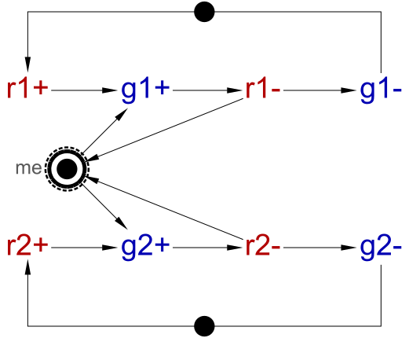
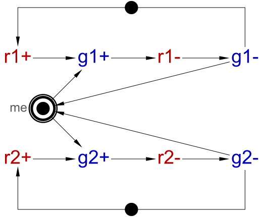
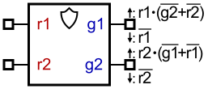
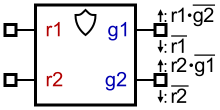
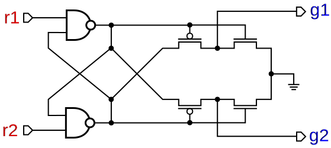

Arbitration protocols
This tutorial focuses mostly on the difference between early and late arbitration protocols and explains why the former is more robust and should be preferred.
Related information:
- Analog-to-asynchronous elements (handling poorly behaving signals (e.g. glitchy or from analog circuitry)
Early vs late arbitration protocols
The arbitration protocol can be viewed as a contract between the arbiter and the rest of the circuit. The early and late arbitration protocols can be formalised as the following STGs:
|  |
| Early arbitration protocol |
|  |
| Late arbitration protocol |
The difference is in which transitions return the token back to place me – in the early protocol these transitions are requests r1- and r2- whereas in the late protocol they are grants g1- and g2-. (The intuition for the naming of the protocols is that the requests are reset prior to grants, i.e. the token returns to me early or late). In Workcraft one can mark a place (me in these STGs) as a MUTEX place and specify the contract – this will affect the visual representation, synthesis, and verification.
One can observe that the early protocol can execute every trace that the late protocol can execute, but not vice versa: E.g. the trace r1+ r2+ g1+ r1- g2+ is possible in the early protocol but impossible in the late protocol. At the end of this trace g1=g2=1, i.e. both grants are high, whereas the grants are guaranteed to be mutually exclusive in the late protocol.
From the point of view of circuit design, the arbiter is usually implemented using a (pre-designed) MUTEX cell, and one has to design a circuit around it, or more precisely, an STG which is then synthesised in a circuit. In other words, an asynchronous designer does not design a MUTEX cell (it is provided as a basic cell), but designs an STG that has to interface a MUTEX cell. Hence, the designer can, conceptually, factor out the MUTEX into the environment and design an STG using, e.g., the early or late protocol shown above.
The early protocol is more permissive, i.e. it places strictly fewer requirements on the MUTEX implementation, in particular it does not require the grants to be mutually exclusive. This means that an STG designed with the early protocol is strictly more robust – the synthesised circuit will be able to cope with the grants being not mutually exclusive. On the other hand, a circuit synthesised from an STG designed with the late protocol may malfunction if in the physical implementation the grants are not mutually exclusive.
Hence, there are two possible way to design a robust circuit (assuming MUTEX follows at least early protocol in either case):
- make sure that MUTEX follows not just early but also late protocol, and design the circuit using either early or late protocol;
- design the circuit using early protocol.
In the following section, we show that the former option may be problematic in practice, and so the latter option is recommended.
Can MUTEX reliably follow the late protocol?
One can derive the set and reset functions for the early and late protocol, and the set functions are different:
|  |
| Early MUTEX |
|  |
| Late MUTEX |
Of course, one cannot just implement these functions – one has to contain the metastability due to the choice between the two grants, and so the real MUTEX implementation is usually as follows (sometimes outputs are buffered):

Consider the state of this circuit after the trace r1+ r2+ g1+ r1-: It can do g1- and g2+ concurrently, and there is no mechanism (other than a timing assumption) that would ensure that g1- happens before g2+; in other words, there is no causal relationship that would make g2+ wait for g1-.
One can rely on the timing assumption that g1- is faster than g2+. However, this assumption then needs to be enforced in the physical circuit, which is non-trivial – it is not enough to consider the MUTEX circuit in isolation, one also need to take into account the loads on its outputs: If the loads are sufficiently misbalanced, e.g. g1 has a high load and g2 has a low load, g1- will be slower than g2+ and so the grants will not be mutually exclusive.
Hence, to enforce the late protocol, one has to not only design the MUTEX cell carefully, but also impose design rules on its use, e.g. limit the load on its outputs. This means that the permissible loads need to be characterised for all corners and technologies, which is not an easy task, and they need to be checked and obeyed during the design. These rules may also make the designs difficult to port between the technologies.
Furthermore, sometimes it may be difficult to ensure that the load on MUTEX outputs is limited – one cannot just buffer the outputs of a late MUTEX – this, in effect, would turn the late protocol into an early protocol unless one makes further timing assumptions about the delays of these buffers. In contrast, buffering the outputs of an early MUTEX is ok, even if the buffers' delays are misbalanced.
Given all the above consideration, the early protocol should be preferred unless there are strong reasons to use the late protocol (e.g. legacy design), in which case extra care should be taken to make sure the late protocol is followed.